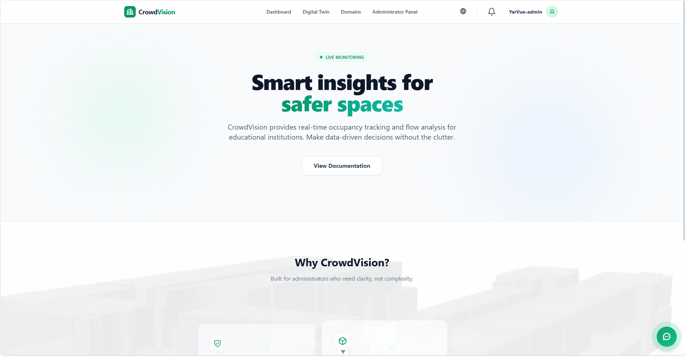

/
User Guide
Welcome to the CrowdVision User Guide.
CrowdVision is a digital twin and crowd-analytics platform. It helps you monitor building occupancy, environmental conditions, and safety alerts in real time — from a single office floor to an entire campus.

Figure 1 — The dashboard you reach after signing in.
| Capability | What it gives you |
|---|---|
| 3D Digital Twin | A live, interactive 3D replica of your buildings and rooms. |
| Analytics Dashboard | Real-time tables and charts of occupancy and environmental data. |
| Smart Notifications | Instant alerts for overcrowding or high temperature, in-app and as browser push. |
| Data Management | Tools to manage domains, buildings, and room data. |
Some views can be browsed as a guest, but actions such as editing rooms or managing domains require a registered account with the right role.
The guide follows the order you will naturally use the product: create an account, sign in, then explore each view. Use the navigation on the left to jump to any topic.
flowchart LR
A["Create an account"] --> B["Sign in"]
B --> C["Dashboard"]
C --> D["Customise the table"]
C --> E["Charts & simulator"]
B --> F["Digital Twin (3D)"]
B --> G["Domains"]
G --> H["Administration"]Every image in this guide is currently a placeholder that describes the screen it represents. To replace one with a real screenshot, drop your image into documentation/user/assets/figures/ using the file name shown in the placeholder and recompile. See assets/README.md for the full shot list.